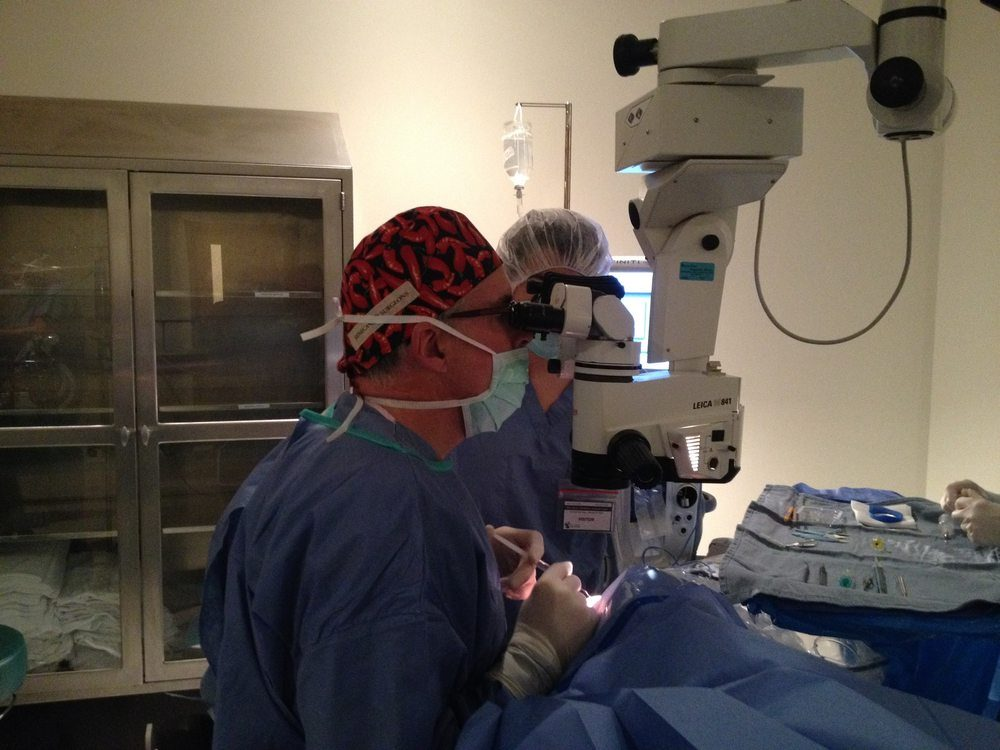

At the Surgical Microscope · Cataract Surgery
Ophthalmology · The Operating Room
Not all journeys are measured in miles. Some are measured in the distance between blindness and sight — a distance that, in a cataract operation, spans about the length of a human eye, roughly twenty-three millimetres, and takes perhaps fifteen minutes to cross.
This photograph shows what the operating room looks like from the outside: the surgeon bent to the eyepieces of the surgical microscope, instruments moving in a field too small to see without magnification, a scrub technician standing by. It is an image of concentration, of trained hands doing a thing they have done thousands of times and still approach with full attention.
Cataract surgery is the most commonly performed surgical procedure in the world. It is also, by almost any measure, one of the most effective — restoring functional vision to people who had lost it, often within hours. For the surgeon, it is the center of a professional life. For the patient, it is something closer to a miracle.
Listen
A dispatch on cataract surgery
The Procedure & Its History
A cataract is a clouding of the eye's natural lens — the transparent disc that sits just behind the iris and focuses light onto the retina. As proteins within the lens break down over time, they clump together and scatter incoming light, progressively dimming and distorting vision. Left untreated, a mature cataract produces near-total blindness. Worldwide, cataracts remain the leading cause of vision loss.
The earliest known treatment for cataracts was couching — a technique practiced in India as early as 600 BCE by the physician Sushruta, and independently developed across the ancient world. A needle or blunt instrument was used to displace the clouded lens downward into the vitreous cavity, out of the visual axis. The result was crude at best: uncorrected vision, risk of infection, and eventual blindness from the displaced lens. But it worked often enough to persist for two thousand years.
The first extracapsular cataract extraction — physically removing the clouded lens from the eye — is credited to the French surgeon Jacques Daviel in 1747. Daviel made a large incision at the corneal margin, opened the lens capsule, and expressed the lens material manually. Recovery was prolonged, results inconsistent, and the procedure performed without anesthesia. It was nonetheless a leap forward: the lens was gone, and with thick corrective glasses, some vision could be restored.
The modern era of cataract surgery began on November 29, 1949, when British ophthalmologist Sir Harold Ridley implanted the first artificial intraocular lens (IOL) at St. Thomas' Hospital, London. Ridley had observed that Royal Air Force pilots whose eyes were penetrated by fragments of Perspex cockpit canopy during World War II showed no inflammatory reaction — prompting his insight that a plastic lens could safely remain inside the eye. The IOL transformed cataract surgery from a procedure that restored dim, distorted vision to one that could achieve near-perfect sight.
The technique used in the photograph — phacoemulsification — was developed by American ophthalmologist Charles Kelman in 1967, inspired, by his own account, by a visit to his dentist. Kelman observed that an ultrasonic dental cleaning tool could break up calcified deposits and wondered whether the same principle might dissolve a cataract. After years of development, phacoemulsification — using ultrasonic vibration delivered through a hollow needle to emulsify and aspirate the lens — made it possible to remove a cataract through an incision of less than three millimetres, requiring no sutures and allowing same-day discharge.
The surgical microscope visible in this photograph represents one of the most consequential instruments in modern medicine. First applied to ophthalmic surgery in the 1950s, the operating microscope provided the magnification and coaxial illumination necessary to work safely inside the anterior chamber of the eye. Without it, the precision required for modern cataract surgery would be impossible. The microscope does not perform the operation — but it makes the operation visible to the hands that do.
"The eye is the window to the world, and the surgeon who restores its clarity does something that no amount of medication or therapy can fully replicate: they give back the world itself."
There is a quality of attention that experienced surgeons develop that is difficult to describe from the outside. It is not the same as concentration in the ordinary sense — it is something quieter, more total. The field of view through the operating microscope is small: a few millimetres of tissue, brilliantly illuminated, magnified many times. Everything outside that field ceases to exist. The surgeon's world, for the duration of the procedure, is exactly as large as one human eye.
Cataract surgery takes place in the anterior chamber — the space between the cornea and the iris — and within the lens capsule itself, a membrane thinner than a sheet of paper. The phacoemulsification handpiece vibrates at approximately 40,000 cycles per second. The incisions are measured in tenths of a millimetre. There is no room for hesitation or imprecision. The work demands a kind of bodily intelligence — a knowledge built into the hands — that accumulates only through thousands of repetitions.
And yet for all its technical demands, cataract surgery is ultimately about something very simple. A person who could not see clearly — who had watched the world dim and blur over months or years, who had given up driving, or reading, or recognizing faces — walks out of the operating suite, removes the eye patch the following morning, and sees. The world is sharp again. Colours have returned. The faces of people they love are legible once more.
For the surgeon, the procedure is routine. For the patient, it is the day they got their world back. That asymmetry — between the ordinary and the extraordinary, between what the surgeon experiences and what the patient receives — is the hidden architecture of a professional life spent at the microscope.